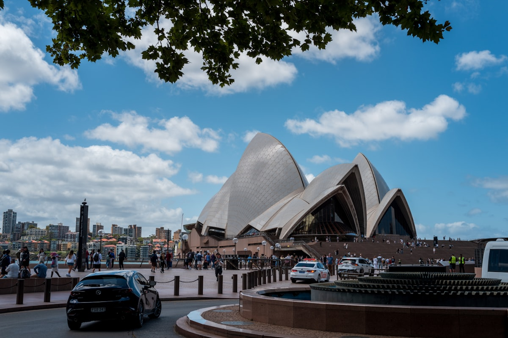
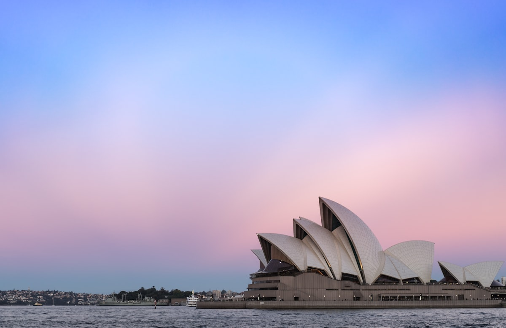
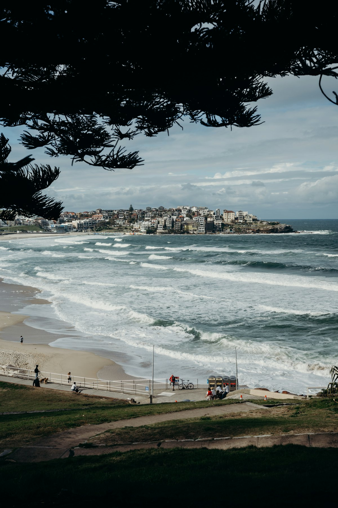
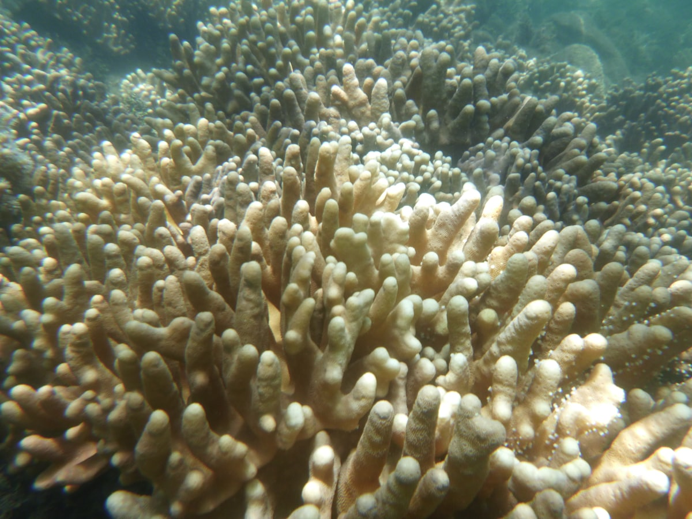
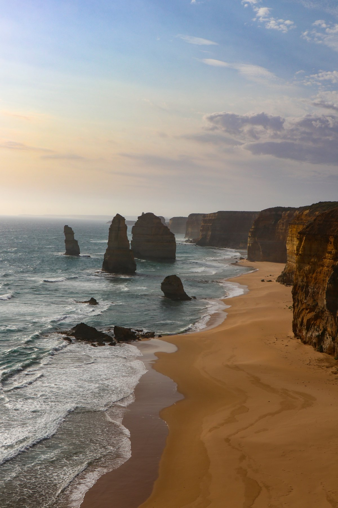
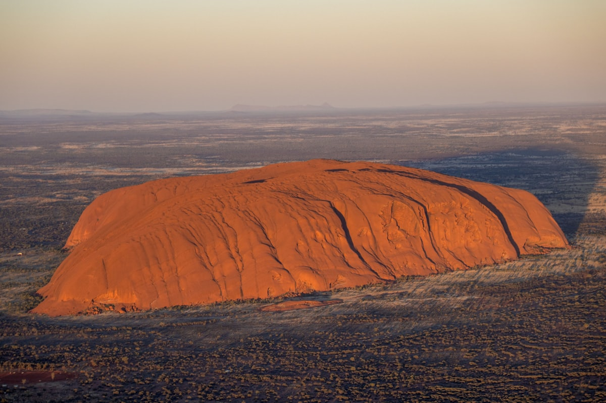
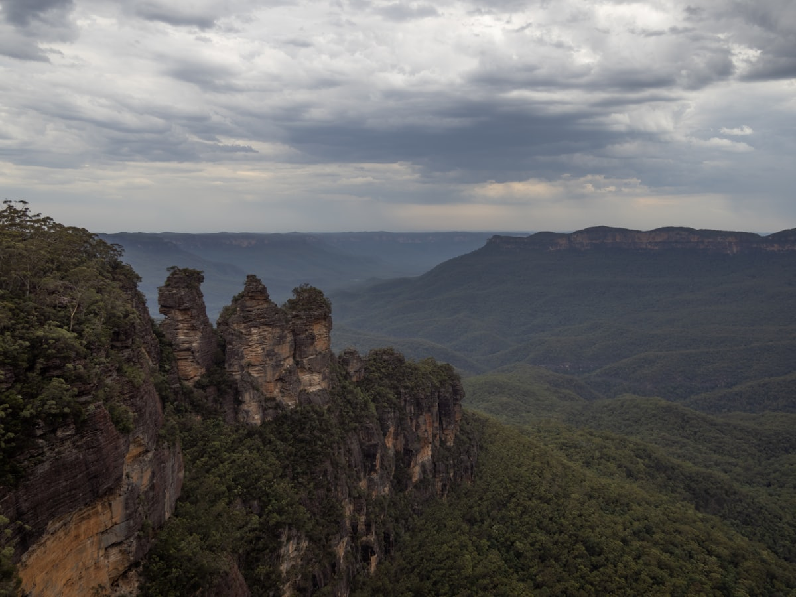
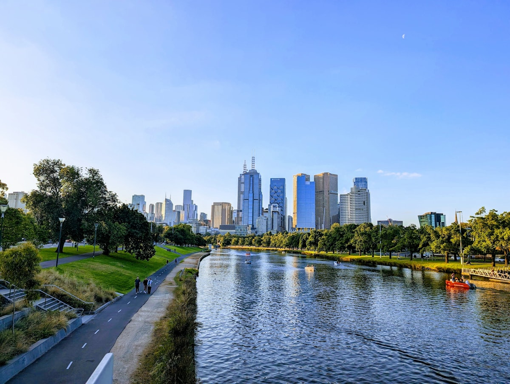

| 事项 | 结论 |
|---|---|
| 事项 | 结论 |
| 签证（最关键） | 澳大利亚 600 类旅游签证：电子递交（ImmiAccount），无需面签，约 2–4 周出签，单次/多次可停留 3–6 个月；护照有效期覆盖行程即可 |
| 时差 | 东岸（悉尼/墨尔本）比北京快 2h，西岸（珀斯）与北京无时差；黄金海岸/凯恩斯为东岸时区 |
| 电源插座 | 澳大利亚 I 型（三个斜扁脚），240V 50Hz；国内充电器需转换插头 |
| 货币 | 澳元 AUD，1 澳元 ≈ 4.7 元人民币；当地信用卡全覆盖（可小额 tap 支付），现金备 200–300 澳元应急 |
| 推荐方案 | 悉尼 4 天 + 蓝山 1 天 + 墨尔本/大洋路 5 天 + 凯恩斯 3 天 + 乌鲁鲁 3 天 + 黄金海岸 3 天 + 珀斯 5 天 + 返程缓冲 |
| 返程约束 | 第 25 天从珀斯/悉尼返京；珀斯有直飞（约 8.5h）或经广州转机 |
| 行程链 | 悉尼 → 蓝山 → 墨尔本 → 大洋路 → 凯恩斯 → 乌鲁鲁 → 黄金海岸 → 珀斯 |
| 预算（人均） | 经济 30000–40000 ／ 标准 46000–60000 ／ 舒适 80000–120000（人民币） |
| 三件提前事 | ① 办 600 签证 ② 订国内段机票（墨尔本—凯恩斯—乌鲁鲁—黄金海岸，提前 1 个月）③ 大堡礁/乌鲁鲁住宿提前 1–2 个月 |
| 季节提醒 | 南半球与北半球相反：12–2 月夏季（悉尼海滩、乌鲁鲁白天热）、6–8 月冬季（黄金海岸避寒、乌鲁鲁凉爽）；10–11 月与 3–4 月最佳 |
| 支付 | Visa/Mastercard 全面覆盖（可小额 tap 支付），现金备 200–300 澳元应急；服务行业小费不强制 |
以下为 25 天 24 晚的推荐节奏：东岸按「悉尼→墨尔本→凯恩斯」推进，再飞乌鲁鲁看红土，最后回黄金海岸收尾；珀斯为可选项（时间够加 5 天）。每日主景点 ≤2 个，长途段用国内航班衔接。
| 日期 | 行程 | 过夜地 | 主题 |
|---|---|---|---|
| D1 抵悉尼 | 北京✈悉尼（直飞约 11h，时差 +2h），入住市区，傍晚环形码头看歌剧院夜景 | 悉尼 | 抵达+预热 |
| D2 | 悉尼歌剧院外观+内部导览 → 海港大桥步行/攀登 → 岩石区周末市集 | 悉尼 | 歌剧院日 |
| D3 | 邦迪海滩 → 邦迪到库吉海滨步道 → 塔龙加动物园（看袋鼠考拉） | 悉尼 | 海滩+动物园 |
| D4 | 悉尼鱼市早餐 → 情人港 → 悉尼塔/植物园 → 达令港夜景 | 悉尼 | 都市漫游 |
| D5 | 蓝山一日：三姐妹峰 → 缆车/索道 → 卢拉小镇 → 回悉尼 | 悉尼 | 蓝山日 |
| D6 | 悉尼✈墨尔本（约 1.5h），入住市中心，弗林德斯街站+联邦广场 | 墨尔本 | 移师墨尔本 |
| D7 | 墨尔本市区：涂鸦街 → 圣保罗大教堂 → 皇家拱廊 → 维多利亚女王市场 | 墨尔本 | 市区漫游 |
| D8 | 大洋路 D1：吉朗 → 洛恩 → 阿波罗湾，宿大洋路小镇 | 大洋路 | 大洋路自驾 |
| D9 | 大洋路 D2：十二门徒 → 伦敦桥 → 坎贝尔港 → 返墨尔本 | 墨尔本 | 十二门徒 |
| D10 | 墨尔本：菲利普岛企鹅归巢（傍晚出发）或 市区购物日 | 墨尔本 | 企鹅日 |
| D11 | 墨尔本✈凯恩斯（约 3h），入住海滨，散步海滨大道 | 凯恩斯 | 飞往凯恩斯 |
| D12 | 大堡礁一日：绿岛/摩尔礁船游 → 浮潜/玻璃底船 → 自助午餐 | 凯恩斯 | 大堡礁日 |
| D13 | 库兰达雨林：空中缆车 → 雨林火车 → 蝴蝶园 → 土著表演 | 凯恩斯 | 库兰达日 |
| D14 | 凯恩斯✈乌鲁鲁（经布里斯班/悉尼转机约 5–7h），入住度假村 | 乌鲁鲁 | 飞往红土 |
| D15 | 乌鲁鲁：巨岩徒步 → 文化中心 → 日落观景台（红酒配落日） | 乌鲁鲁 | 乌鲁鲁日落 |
| D16 | 乌鲁鲁日出 → 卡塔丘塔（风之谷）徒步 → 星空晚餐（可选） | 乌鲁鲁 | 卡塔丘塔 |
| D17 | 乌鲁鲁✈黄金海岸/布里斯班（转机约 4–6h），入住冲浪者天堂 | 黄金海岸 | 移师黄金海岸 |
| D18 | 黄金海岸：冲浪者天堂海滩 → 可伦宾野生动物园（抱考拉） | 黄金海岸 | 海滩+动物园 |
| D19 | 黄金海岸：主题乐园（梦幻世界/华纳电影世界）或 出海观鲸（季节） | 黄金海岸 | 乐园日 |
| D20 | 黄金海岸→布里斯班一日：南岸公园 → 故事桥 → 皇后街购物 → 返程 | 黄金海岸 | 布里斯班日 |
| D21 | 黄金海岸✈珀斯（直飞约 5.5h），入住市区，天鹅河畔散步 | 珀斯 | 飞往珀斯 |
| D22 | 珀斯：国王公园 → 天鹅河 → 城市海滩/科茨洛海滩 | 珀斯 | 珀斯市区 |
| D23 | 罗特尼斯岛一日：渡轮上岛 → 骑行环岛 → 短尾矮袋鼠合照 | 珀斯 | 罗特尼斯岛 |
| D24 | 珀斯周边：尖峰石阵（沙漠石灰岩柱）或 天鹅谷酒庄一日 | 珀斯 | 周边日 |
| D25 返程 | 珀斯✈北京（直飞约 8.5h 或 经广州转机 12–15h），入境到家 | — | 收尾 |
以下为 25 天全程的逐小时执行时间线，可当作「当天打开照着走」的清单。标注 ※ 的可选项视体力与天气取舍。
| 时间 | 事项 |
|---|---|
| 09:00–20:00 | 北京✈悉尼（直飞约 11h，南航/国航；时差 +2h，基本无感） |
| 20:30–21:30 | 机场火车/打车到市区（机场线约 20 澳元），入住市中心酒店 |
| 21:30–23:00 | 环形码头（Circular Quay）：悉尼歌剧院夜景首见 |
| 23:00 | 回酒店休息，适应南半球季节 |
| 时间 | 事项 |
|---|---|
| 08:30–11:00 | 悉尼歌剧院：外观拍照+内部 1 小时导览（成人约 45 澳元，中文场次提前订） |
| 11:00–12:30 | 海港大桥：桥面步行（免费）或 攀登体验（约 250–400 澳元，可选） |
| 12:30–13:30 | 午餐：环形码头/岩石区 |
| 13:30–16:00 | 岩石区（免费）：周末市集、老仓库街拍、当代艺术馆 |
| 16:30–18:30 | 悉尼港渡轮（约 10 澳元）：看歌剧院与大桥最佳水景 |
| 19:00 | 晚餐：环形码头海鲜/达令港 |
| 时间 | 事项 |
|---|---|
| 08:30–10:00 | 市区乘公交/火车到邦迪海滩（约 40min） |
| 10:00–12:00 | 邦迪到库吉海滨步道（免费，约 6km/2h）：悬崖海岸线，冰水池拍照 |
| 12:00–13:00 | 午餐：邦迪海滩咖啡/汉堡 |
| 13:30–16:30 | 塔龙加动物园（成人约 52 澳元）：袋鼠、考拉、鸭嘴兽，海港景观一流 |
| 17:00–18:30 | 达令港码头日落 |
| 19:00 | 晚餐：达令港餐厅 |
| 时间 | 事项 |
|---|---|
| 08:00–10:00 | 悉尼鱼市场（免费入场）：现开生蚝、炸鱼薯条早餐 |
| 10:30–12:30 | 皇家植物园（免费）：麦考利夫人角拍歌剧院+大桥同框 |
| 12:30–13:30 | 午餐：植物园边/唐人街 |
| 14:00–16:00 | 悉尼塔（观景台约 35 澳元）或 州立美术馆（免费） |
| 16:30–18:30 | 维多利亚女王大厦（免费，购物+建筑）、唐人街小吃 |
| 19:00 | 晚餐：唐人街或岩石区，准备次日蓝山 |
| 时间 | 事项 |
|---|---|
| 08:00–10:00 | 悉尼自驾/乘火车到蓝山（约 1.5–2h，火车到卡通巴 Katoomba） |
| 10:00–12:30 | 三姐妹峰（免费）：回声角观景台，看砂岩柱林 |
| 12:30–13:30 | 午餐：卡通巴镇 |
| 13:30–16:00 | 蓝山缆车/索道（往返约 52 澳元）：空中缆车+世界上最陡的索道 |
| 16:00–18:00 | 卢拉（Leura）小镇花园街拍，返悉尼 |
| 19:00 | 晚餐：悉尼晚餐，次日飞墨尔本 |
| 时间 | 事项 |
|---|---|
| 08:00–09:30 | 悉尼机场乘机（墨尔本约 1.5h，提前订 400–800 元） |
| 10:00–11:30 | 机场线进城，入住市中心/弗林德斯街附近 |
| 11:30–13:30 | 弗林德斯街车站+联邦广场（免费）：墨尔本地标会面点 |
| 13:30–15:00 | 午餐：联邦广场/唐人街 |
| 15:00–17:30 | 圣保罗大教堂（免费）→ 皇家拱廊街拍 |
| 18:00 | 晚餐：墨尔本小巷餐厅（小巷文化是特色） |
| 时间 | 事项 |
|---|---|
| 08:30–10:00 | 霍西尔巷涂鸦街（免费）：世界级街头艺术巷 |
| 10:00–12:00 | 维多利亚女王市场（免费入场）：南半球最大露天市场，试吃奶酪果酱 |
| 12:00–13:30 | 午餐：市场里吃海鲜/咖喱角 |
| 13:30–16:00 | 墨尔本博物馆+皇家展览馆（博物馆约 20 澳元）或 州立图书馆 |
| 16:30–18:00 | 亚拉河南岸步道 → 尤里卡大厦 88 层观景台（约 28 澳元）看日落 |
| 19:00 | 晚餐：南岸/唐人街 |
| 时间 | 事项 |
|---|---|
| 08:00–10:30 | 墨尔本出发沿大洋路（Great Ocean Road）西行，途经冲浪小镇托基 |
| 10:30–12:00 | 安格尔西岛灯塔+海滩（考拉出没） |
| 12:00–13:00 | 午餐：阿波罗湾渔村海鲜 |
| 13:30–16:00 | 大奥特韦国家公园：雨林徒步看巨大桉树 |
| 16:00–18:00 | 宿阿波罗湾/坎贝尔港，海边看日落 |
| 时间 | 事项 |
|---|---|
| 07:30–09:30 | 坎贝尔港出发看十二门徒日出（免费）：石灰岩柱群海景 |
| 09:30–11:30 | 吉布森台阶下海滩 → 伦敦桥 → 沉船海岸 |
| 11:30–12:30 | 午餐：坎贝尔港 |
| 12:30–16:00 | 返程墨尔本（约 4h），途中可停 格洛普角 |
| 16:30–18:30 | 回墨尔本休息，晚餐：墨尔本牛排 |
| 19:00 | 自由活动/夜游亚拉河 |
| 时间 | 事项 |
|---|---|
| 09:00–12:00 | 墨尔本出发前往菲利普岛（约 2h），途中布莱尔高里看考拉保护区 |
| 12:00–13:30 | 午餐：岛上海鲜 |
| 13:30–16:30 | 丘吉尔岛传统农庄（约 17 澳元）→ 诺比斯角海豹观景台 |
| 17:30–21:00 | 企鹅归巢（普通看台约 40 澳元）：夜幕下小蓝企鹅摇摇摆摆上岸，禁止拍照闪光灯 |
| 21:30 | 返回墨尔本（约 2h） |
| 时间 | 事项 |
|---|---|
| 08:00–09:30 | 墨尔本✈凯恩斯（约 3h，提前订 600–1200 元） |
| 10:00–11:30 | 入住凯恩斯海滨酒店，漫步海滨大道（免费泳池区） |
| 11:30–13:00 | 午餐：凯恩斯码头区 |
| 13:30–16:00 | 凯恩斯植物园（免费，热带雨林植物）或 市政游泳池 |
| 16:30–18:30 | 日落码头 → 夜市小吃 |
| 19:00 | 晚餐：夜市/海滨餐厅，准备次日大堡礁 |
| 时间 | 事项 |
|---|---|
| 07:00–08:00 | 码头登船（Quicksilver/Sunlover 等船公司），含早餐 |
| 08:30–12:00 | 快船前往摩尔礁/绿岛（约 1.5–2h 航程），海上平台浮潜+玻璃底船 |
| 12:00–13:00 | 海上平台自助午餐（含在船票内） |
| 13:00–15:30 | 深潜体验（额外约 100–150 澳元，可选项）或 继续浮潜 |
| 16:00–18:30 | 返航凯恩斯码头 |
| 19:00 | 晚餐：凯恩斯海鲜/牛排 |
| 时间 | 事项 |
|---|---|
| 08:00–09:00 | 凯恩斯出发：库兰达空中缆车（Skyrail，成人约 55 澳元）：从山脚到雨林腹地 |
| 09:30–12:00 | 缆车中途停靠巴伦瀑布站：雨林栈道+瀑布观景 |
| 12:00–13:30 | 库兰达小镇午餐：雨林咖啡+袋鼠肉可选 |
| 13:30–16:00 | 雨林火车（约 50 澳元）：怀旧蒸汽火车沿悬崖山谷返回凯恩斯；或 蝴蝶园/考拉园 |
| 16:30–18:00 | 返凯恩斯，晚餐：码头区 |
| 19:00 | 自由活动/早休息，次日飞乌鲁鲁 |
| 时间 | 事项 |
|---|---|
| 07:00–12:00 | 凯恩斯✈乌鲁鲁（无直飞，经布里斯班/悉尼转机，全程约 5–7h） |
| 13:00–14:30 | 入住艾尔斯岩度假村（Yulara，距巨岩 20km），午餐 |
| 15:00–17:30 | 度假村文化中心+免费日落观景台热身 |
| 18:00–20:00 | 晚餐：度假村餐厅（有澳式烧烤夜） |
| 20:30 | 早休息，为次日日出做准备 |
| 时间 | 事项 |
|---|---|
| 06:00–08:00 | 乌鲁鲁日出（日出观景台）：巨岩从黑到红变色 |
| 08:30–10:30 | 乌鲁鲁基徒步（免费，约 2h 环线）：沙漠橡树+岩石纹理，途中可看原住民岩画 |
| 10:30–11:30 | 库尼亚步道（Kuniya Walk）：水潭与壁画 |
| 11:30–13:00 | 午餐：度假村 |
| 15:30–19:30 | 日落观景台（约 15 澳元接送）：红酒+奶酪配巨石落日（经典项目） |
| 19:30 | 晚餐：度假村自助/星空晚餐（可选 200+ 澳元） |
| 时间 | 事项 |
|---|---|
| 05:30–07:00 | 日出观景台：乌鲁鲁+卡塔丘塔同框 |
| 07:30–10:30 | 卡塔丘塔风之谷徒步（免费，约 3h 环线）：红色圆顶巨石群 |
| 10:30–11:30 | 瓦帕峡谷（Walpa Gorge）短步道 |
| 11:30–13:00 | 午餐：度假村 |
| 13:30–17:00 | 自由：骑行/直升机俯瞰乌鲁鲁（可选，约 350 澳元） |
| 18:00–21:00 | 星空晚餐（可选，约 250–350 澳元）：沙漠晚餐+南半球银河 |
| 21:30 | 回酒店 |
| 时间 | 事项 |
|---|---|
| 07:00–12:00 | 乌鲁鲁✈黄金海岸/布里斯班（转机，全程约 4–6h） |
| 12:30–14:00 | 入住冲浪者天堂（Surfers Paradise），午餐：海滩边 |
| 14:30–17:00 | 冲浪者天堂海滩（免费）：金色沙滩+高层天际线 |
| 17:00–19:00 | 卡维尔大道（Cavill Ave）购物+街头表演 |
| 19:30 | 晚餐：海滩餐厅/牛排 |
| 时间 | 事项 |
|---|---|
| 08:30–11:00 | 可伦宾野生动物园（成人约 59 澳元）：抱考拉（另收费）、喂袋鼠、剪羊毛秀 |
| 11:00–12:30 | 返海滩，午餐：冲浪者天堂 |
| 13:00–16:00 | 冲浪体验课（约 60–80 澳元，含教练）或 海滩放松 |
| 16:30–18:30 | 海边日落散步 → 傍晚卡维尔大道晚餐 |
| 19:00 | 自由活动/夜生活 |
| 时间 | 事项 |
|---|---|
| 08:30–17:00 | 梦幻世界（Dreamworld，约 90 澳元）或 华纳兄弟电影世界（约 99 澳元）：过山车+电影主题区 |
| 12:00–13:30 | 园内午餐 |
| 13:30–17:00 | 继续项目：激流勇进/儿童区/飞行影院 |
| 17:30–19:30 | 返冲浪者天堂，晚餐：牛排馆 |
| 20:00 | 早休息，次日布里斯班 |
| 时间 | 事项 |
|---|---|
| 08:30–09:30 | 黄金海岸乘火车/自驾到布里斯班（约 1h） |
| 09:30–12:00 | 南岸公园（免费）：人工沙滩+摩天轮，故事桥远眺 |
| 12:00–13:30 | 午餐：南岸美食街 |
| 13:30–16:00 | 皇后街购物中心 → 布里斯班市政厅钟楼 |
| 16:30–18:30 | 故事桥（可选攀爬）或 河滨步道日落 |
| 19:00 | 晚餐后返黄金海岸 |
| 时间 | 事项 |
|---|---|
| 07:30–09:00 | 黄金海岸/布里斯班✈珀斯（直飞约 5.5h，跨一个时区 +0h 时差） |
| 10:00–11:30 | 机场线进城，入住市中心/伊丽莎白码头 |
| 11:30–13:30 | 午餐：天鹅河畔餐厅 |
| 13:30–16:00 | 天鹅河步行道（免费）：河畔新貌+北桥区街拍 |
| 16:30–18:30 | 伊丽莎白码头黄昏，看天鹅河日落 |
| 19:00 | 晚餐：北桥区（珀斯唐人街） |
| 时间 | 事项 |
|---|---|
| 08:30–11:30 | 国王公园（免费）：世界最大市区公园之一，看天鹅河+城市天际线 |
| 11:30–13:00 | 午餐：公园咖啡/海伊街 |
| 13:30–16:00 | 珀斯铸币局（约 19 澳元）→ 圣乔治大教堂 |
| 16:30–18:30 | 科茨洛海滩（免费）：西海岸日落经典（夕阳落海） |
| 19:00 | 晚餐：海滩区海鲜 |
| 时间 | 事项 |
|---|---|
| 07:30–08:30 | 弗里曼特尔港乘渡轮（约 25min，往返约 90 澳元） |
| 09:00–12:00 | 罗特尼斯岛骑行（租车约 35 澳元/天）：环岛海景+粉红湖（非澳洲粉湖） |
| 12:00–13:30 | 午餐：岛上餐厅/野餐 |
| 13:30–16:00 | 短尾矮袋鼠（Quokka）：微笑合影（全球最快乐动物），禁止触碰喂食 |
| 16:30–18:30 | 返航弗里曼特尔，顺访弗里曼特尔市场/监狱（可选） |
| 19:00 | 晚餐：弗里曼特尔/珀斯 |
| 时间 | 事项 |
|---|---|
| 07:00–10:00 | 珀斯出发自驾到尖峰石阵（约 2.5h）：数千根石灰岩柱矗立沙漠 |
| 10:00–12:30 | 尖峰石阵景区步行/自驾环线（门票约 17 澳元/车） |
| 12:30–14:00 | 午餐：兰斯林/塞万提斯小镇 |
| 14:30–17:30 | 返程途经天鹅谷（Swan Valley）：品酒+巧克力工厂 |
| 18:00 | 晚餐：天鹅谷酒庄晚餐/珀斯市区 |
| 20:00 | 打包行李，次日返程 |
| 时间 | 事项 |
|---|---|
| 07:30–09:00 | 退房，珀斯市区最后采购（袋鼠肉干/澳宝/UGG 等伴手礼） |
| 09:30–11:00 | 机场线到珀斯机场 |
| 13:00–21:30 | 珀斯✈北京（直飞约 8.5h，南航/澳航季节航线）或 经广州/香港转机 12–15h |
| 21:30 | 入境到家 |
必去（必去）/ 顺路（顺路）/ 可跳过（可跳过）。

必去
必去
必去
必去
必去
顺路
顺路图片为 Unsplash 主题图（悉尼歌剧院、邦迪海滩、大堡礁、十二门徒、乌鲁鲁、蓝山、墨尔本均为澳大利亚实景），用于页面配图。更多免费景点：皇家植物园、岩石区市集、国王公园、南岸公园、冲浪者天堂海滩。
点击左侧节点可在地图上定位；点击地图 marker 会高亮对应节点。坐标为 WGS-84 转 GCJ-02 纠偏后标注。
以下为单人、不含购物的估算，人民币计价；出发地基准北京。汇率按 1 澳元 ≈ 4.7 元人民币估算。往返国际机票按淡季 4000–6000 元计，国内段 5 程合计 3500–5500 元。
| 项目 | 经济（30000–40000） | 标准（46000–60000） | 舒适（80000–120000） |
|---|---|---|---|
| 往返机票 | 北京⇄悉尼 4000–5500 | 含珀斯往返 6000–8000 | 直飞商务/灵活 15000–25000 |
| 国内段机票（5 程） | 3500–5000（提前 1 个月订） | 5000–6500（灵活时段） | 8000–12000（任意时间） |
| 住宿（24 晚） | 青旅/汽车旅馆 300–450/晚 | 三星/公寓酒店 500–850/晚 | 度假村/海景房 1200–2500/晚 |
| 交通（租车等） | 公交+大洋路 1 段租车 2500–3500 | 大洋路/罗特尼斯租车 4000–5500 | 全段自驾+包车 8000–13000 |
| 门票 | 基础景点约 1500–2500 | 含大堡礁/动物园/乐园 4000–6000 | 全含+攀登+直升机 9000–15000 |
| 餐饮（25 天） | 超市+简餐 4500–6000 | 正常下馆子 8000–11000 | 牛排/海鲜/酒庄 18000–28000 |
带孩子推荐：塔龙加动物园（悉尼）+可伦宾野生动物园（黄金海岸，抱考拉）+梦幻世界+布里斯班南岸公园免费玩水；砍掉乌鲁鲁徒步与罗特尼斯岛骑行（岛内巴士代替）。昆州/新州动物园儿童多有优惠，大堡礁船游有家庭套餐。注意澳洲海滩夏季防晒、水母防护。
北半球冬季去澳洲正好避寒：黄金海岸 20℃+、大堡礁旱季水下最清澈，乌鲁鲁白天 20℃ 徒步舒适；可加凯恩斯—汉密尔顿岛大堡礁跳岛（冬季是观鲸季）。若想体验澳洲冬季的雪，去悉尼南部的雪山（斯雷德博/佩里舍滑雪，6–9 月）。
| 方式 | 时长 | 参考价 | 备注 |
|---|---|---|---|
| 直飞（推荐） | 北京→悉尼约 11h / 珀斯约 8.5h | 往返 4000–6000 元 | 国航/南航/澳航，悉尼、墨尔本、珀斯可选 |
| 转机 | 13–18h | 3500–5500 元 | 经广州/香港/新加坡/吉隆坡，便宜但费时 |
| 国际铁路 | — | — | 中国到澳洲无陆路，只能飞机 |
| 区域 | 价格/晚 | 优点 | 短板 |
|---|---|---|---|
| 悉尼·环形码头/岩石区 | 经济 500–800 / 标准 900–1500 | 歌剧院大桥步行可达 | 旺季极贵，房间小 |
| 悉尼·达令港 | 经济 450–700 / 标准 800–1300 | 夜景与餐厅多 | 离环形码头稍远 |
| 墨尔本·市中心/弗林德斯街 | 经济 400–650 / 标准 700–1200 | 电车免费区全覆盖 | 周末酒吧街略吵 |
| 凯恩斯·海滨大道 | 经济 400–650 / 标准 700–1200 | 码头集合方便，泳池多 | 雨季闷热 |
| 乌鲁鲁·艾尔斯岩度假村 | 经济 600–900 / 标准 1000–1800 | 进公园唯一住宿点 | 价格高，旺季爆满 |
| 黄金海岸·冲浪者天堂 | 经济 400–650 / 标准 700–1200 | 海滩+商圈集中 | 游客多，停车贵 |
| 珀斯·市中心/伊丽莎白码头 | 经济 400–650 / 标准 700–1200 | 天鹅河景观，新城区 | 离海滩较远 |